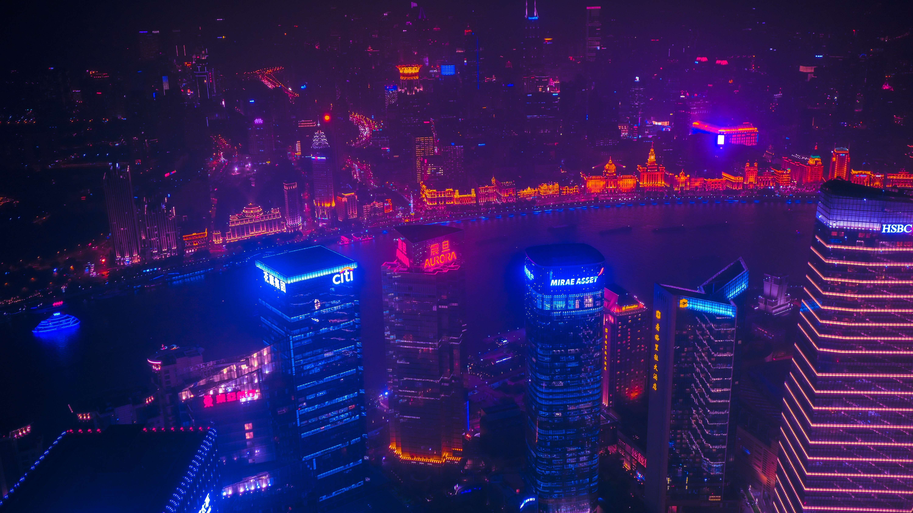

Altered Carbon - The Dystopian Dream of the Rich
I would like to go a bit off topic with this post and talk about the TV-show “Altered Carbon”. It is in my opinion an excellent piece of television that presents us an insight into a future coined by everlasting inequality and immortality.
“Immortality?”, you may ask now. Yes, Altered Carbon is set over 360 years in the future and mainly resolves around one piece of technology that has been developed: the cortical stack. It allows you to store your memories and consciousness on it, and once your body dies you can easily implant it into a new body to continue living. In itself already quite an interesting concept, but the show deals with further societal issues arising from it. For example, conflicts with religion and ethnics are in focus of this show, dealing with the debate of how we define human life, and if we should be allowed to live indefinitely. But the world of Altered Carbon also faces further problems like overpopulation and – what I would like to talk about more – inequality.
In the world of Altered Carbon, the wealthiest are the only ones able to afford the technology to extend their lifetime. Most of society actually does not benefit from it, while most the rich have already lived for more than 200 years. For that reason, the rich are referred to as “Meths” in reference to Methuselah, a biblical figure who allegedly lived for 969 years. Anyway, wealth accumulates wealth until we die and have to pass it on our family. But this limitation does not exist anymore in the world of Altered Carbon. The Rich or “Meths” can keep creating wealth, getting more influence, becoming god-like beings that not even the government has control over. Talking about equal opportunities, imagine being born into a world where the most influential individuals have already lived for centuries. How are you supposed to catch up on that? You are not, and that is what Altered Carbon deals with. I strongly recommend anyone that enjoys Sci-Fi and dystopian themes to give it a try.
Photo from: Unsplash
About the show: IMDB - Altered Carbon